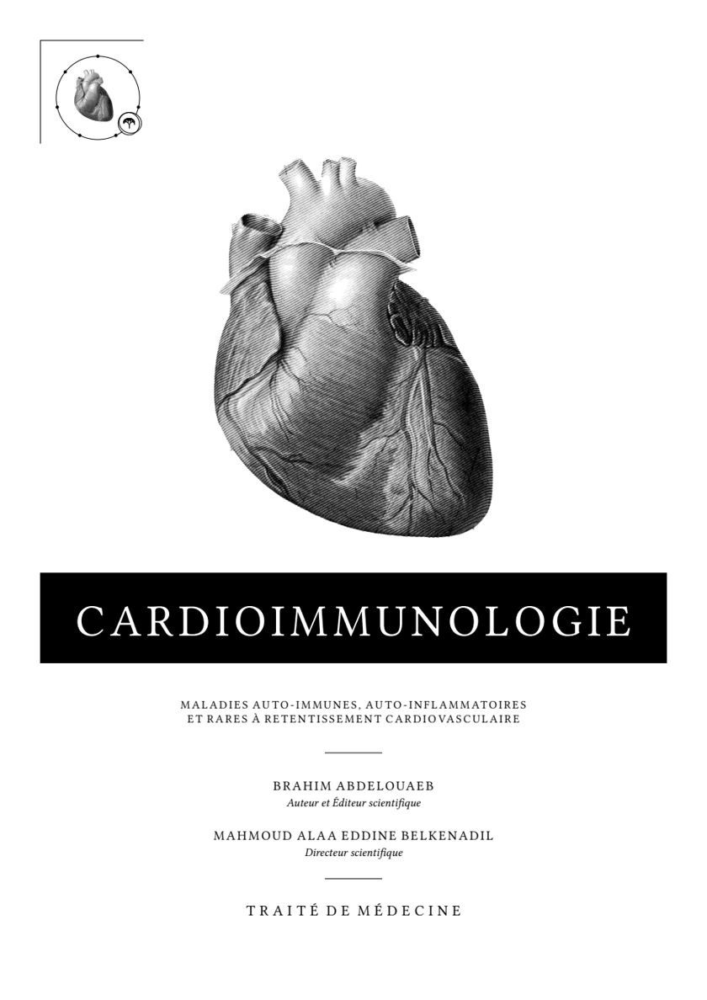

Le Traité
Cardioimmunologie
Maladies auto-immunes, auto-inflammatoires et rares à retentissement cardiovasculaire. Traité de médecine
Présentation
Nous lisons le vaisseau et le cœur comme des organes immunitaires, et l'endothélium comme la frontière où l'immunité rencontre l'hémodynamique. La frontière entre la cardiologie et l'immunologie n'est pas une frontière naturelle. C'est un artefact de l'histoire médicale, et nous la traversons. Nous proposons une médecine d'interfaces immunologiques, dont le cœur est le milieu, parce que son vaisseau atteint chaque organe et que son sang touche chaque cellule. Sept paradigmes la portent. La démonstration : une part de l'hypertension artérielle, la plus frappante des maladies cardiovasculaires, repose sur un socle immuno-inflammatoire. La réorganisation : les formes immuno-médiées de l'hypertension et de l'hypertension pulmonaire, dispersées dans les classifications, se rassemblent sur deux cartes. La loi : le cœur héberge sa propre immunité ; elle répare la blessure, et devient contre-productive dans certains cas de dysrégulation. L'appel : l'inflammation est documentée dans l'insuffisance cardiaque sous toutes ses formes ; nous en attendons des thérapies anti-inflammatoires ciblées et, demain, des voies pro-résolutives. La source : le risque cardiovasculaire se lit aussi dans la moelle, où un clone de cellules souches mutées, fréquent avec l'âge, s'associe à l'infarctus et à l'insuffisance cardiaque. L'horizon : la fin de l'inflammation est un programme actif ; l'aider à se résoudre ouvre une nouvelle génération d'essais. Le dernier territoire : le ventricule droit, l'oreillette droite et la circulation pulmonaire, déjà riches de travaux, restent des axes d'étude précieux pour cette lecture. L'immunologie devient ainsi, pour la médecine du cœur, ce que l'anatomie fut pour la chirurgie : la carte qui précède le geste.
Le parcours du livre
Sommaire
Choisissez un chapitre pour le lire ici, dans l’édition originale.
Partie IPrincipes et mécanismes
Partie IIMaladies auto-immunes, auto-inflammatoires et infiltratives
- 05Péricardites immuno-médiées
- 06Myocardites : physiopathologie, diagnostic et prise en charge
- 07Cardiopathies inflammatoires et infiltratives : sarcoïdose et amyloses (AL, ATTR, AA)
- 08Atteintes cardiovasculaires des maladies auto-immunes systémiques
- 09Atteintes cardiovasculaires des vascularites systémiques
- 10Syndromes auto-inflammatoires
- 11Hypertension pulmonaire des maladies auto-immunes
- 12Maladies systémiques rares à expression cardiovasculaire